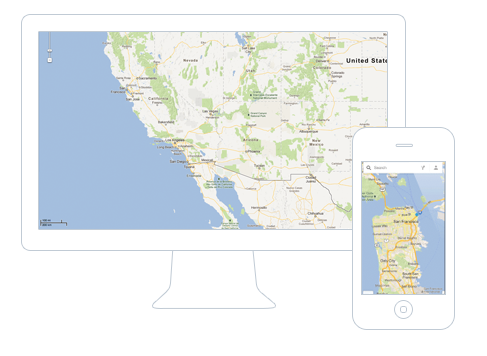

Sign Up
/
Sign In
Hyper local, crowd sourced, industry disruptor.
Sign in with Facebook
Sign in with Google

Let’s face it: You need a
better way to check in
and
share your creative side
with the people who matter the most. People rave about the ability to:
Add filters and crop pictures
Check in to dinner and check out of reality
Write reviews from a hyperlocal perspective
Rate 1 to 5 stars on everything
Push to all your favorite social networks
Discover new people just like you
Sign Up
Already a member?
Sign In
First and Last Name
Email Address
Password
Sign in with Facebook
Sign in with Google
Start off with familiar faces by signing in with Facebook or Google. We will never post anything to your Facebook or Google account.